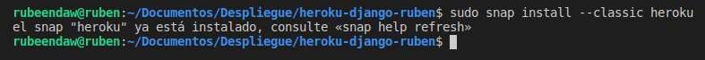
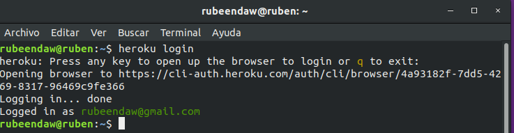
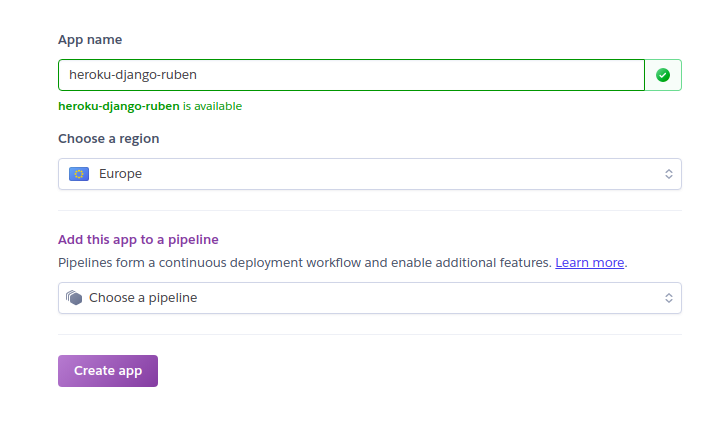
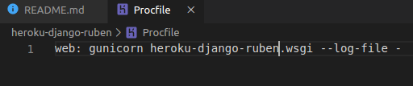
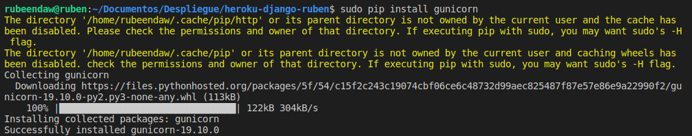
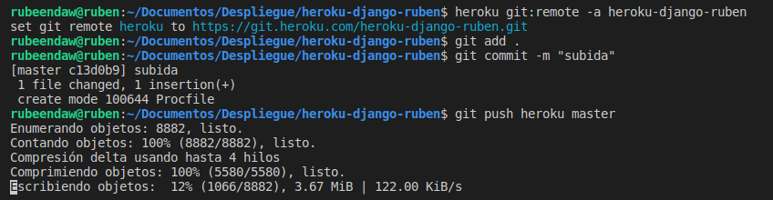
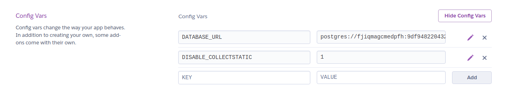
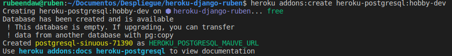
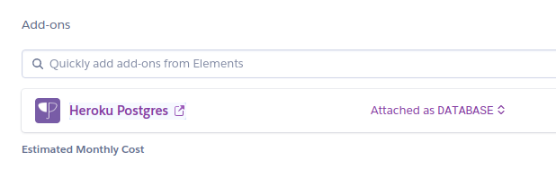

Actividad 7
Heroku es una plataforma como servicio de computación en la Nube que soporta distintos lenguajes de programación. y es uno de los PaaS más utilizados en la actualidad en entornos empresariales por su fuerte enfoque en resolver el despliegue de una aplicación.
A Heroku solo le dices qué lenguaje de backend estás utilizando o qué base de datos vas a utilizar y te preocupas únicamente por el desarrollo de tu aplicación
Heroku utiliza contenedores Linux los cuales son llamados “dynos”, estos son utilizados para alojar las aplicaciones web, webservices o aplicaciones que se ejecutan del lado del servidor, así mismo cuenta con la posibilidad de instalar add-ons para agregar funcionalidades a dichos contenedores,
Compruebo que tenga instalado heroku:

Lo primero que he realizado ha sido registrarme:

Luego creamos la app con heroku create o desde la parte gráfica:

Creamos el Procfile:

Para que nos funcione la linea del Procfile necesitamos instalarla:

Añadimos y subimos a heroku:

Antes de terminar el push me ha dado un error el cual se ha arreglado con el siguiente comando:
heroku config:set DISABLE_COLLECTSTATIC=1
He vuelto a hacer el push y funciona correctamente
Podemos ver como ha funcionado y se ha guardado en las variables:

Ponemos postgresql desde heroku cli

Por último vemos en la parte gráfica el add-on:
